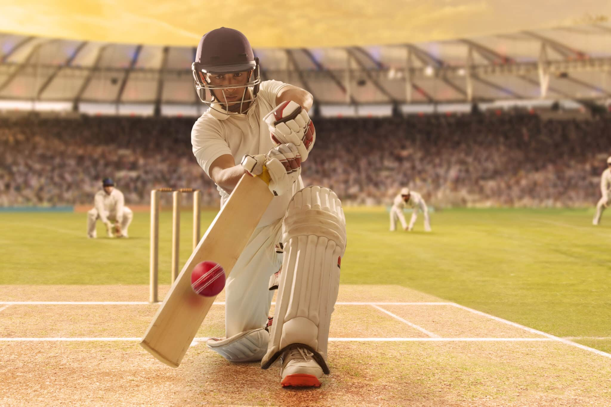

Cricket is one of many games in the "club ball" sphere that involve hitting a ball with a hand-held implement.A key difference is the existence of a solid target structure, the wicket (originally, it is thought, a "wicket gate" through which sheep were herded), that the batter must defend.The cricket historian Harry Altham identified three "groups" of "club ball" games: the "hockey group", in which the ball is driven to and from between two targets (the goals); the "golf group", in which the ball is driven towards an undefended target (the hole); and the "cricket group", in which "the ball is aimed at a mark (the wicket) and driven away from it".
